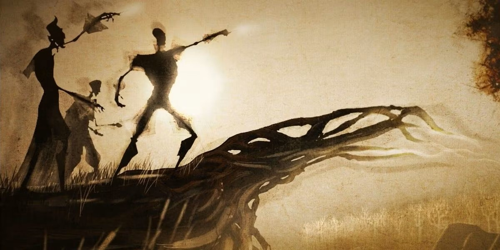
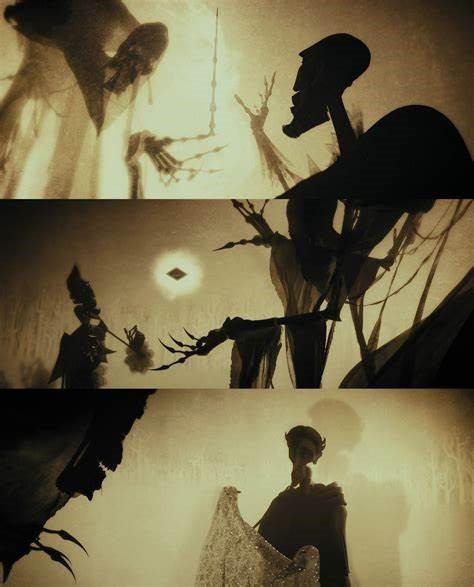

El cuento de los Tres Hermanos
El Cuento de los Tres Hermanos cuenta que tres hermanos, Antioch Peverell, Cadmus Peverell e Ignotus Peverell se desenvolvieron en el arte de la magia. Un día tuvieron que cruzar un río de fuertes corrientes, se las ingeniaron para hacer aparecer un puente y no morir ahogados ya que muchas personas habían nadado para llegar al otro lado y murieron en el intento. Una vez cruzado el puente, se les apareció la muerte y como "premio" por haberla burlado se ofreció a darles algo en recompensa

El hermano mayor, muy ambicioso, le pidió una varita con la que nunca pudiera ser vencido, así que La Muerte fue hasta un viejo árbol de Saúco en la ribera del río, le dió forma de varita a una rama que colgaba, y se la entregó al hermano mayor. El segundo hermano le pidió algo con lo que pudiera resucitar a los muertos, de manera que le entregó la Piedra de la Resurrección, y el tercer hermano, que era el menos ambicioso y más humilde, le pidió una manera de poder burlar a la muerte de manera permanente, por lo que a ésta le entregó la Capa de Invisibilidad.
Posteriormente los tres hermanos continuaron su camino. El mayor se marchó a una aldea en la que se alojaba un mago con el que había tenido una disputa. Se batieron en duelo y Antioch mató a su enemigo gracias a su varita. Luego se retiró a una posada en la que presumió su poder y se tendió ebrio en una cama. Esa noche, un mago se acercó a él sigiloso, le robó la varita y le cortó el cuello por si acaso. Así fue como la Muerte se llevó al hermano mayor.
El mediano llegó a su casa, giró la Piedra tres veces sobre su mano y apareció la mujer con la que se habría casado, pero esta se mostraba triste y distante, separada de su amado por una especie de velo. Ella ya no pertenecía al mundo de los vivos, sino al de los difuntos, y por ello sufría. El hombre no soportó ver a su amada y enloqueció, suicidándose de una vez por todas para reunirse con ella. De esta manera la Muerte se quedó con el segundo hermano.
La Muerte buscó al menor durante años, aunque sin éxito. Cuando Ignotus llegó a una edad avanzada, legó la Capa de Invisibilidad a su hijo, se reunió con la Muerte como si fuera una vieja amiga y, como iguales, se marcharon al mundo de los muertos.